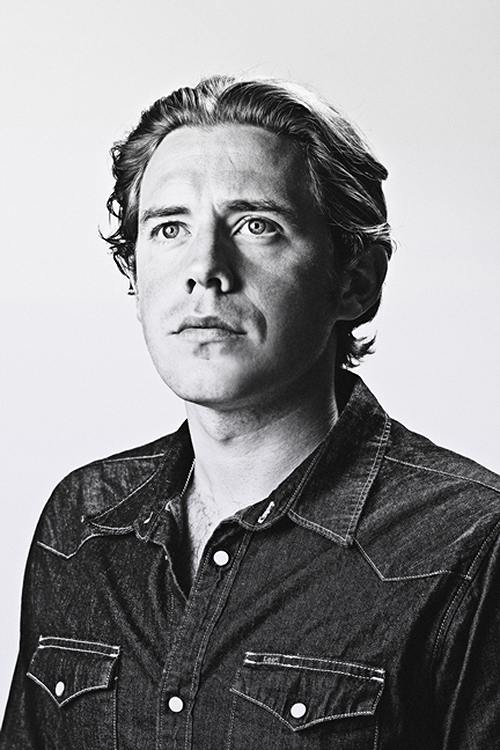
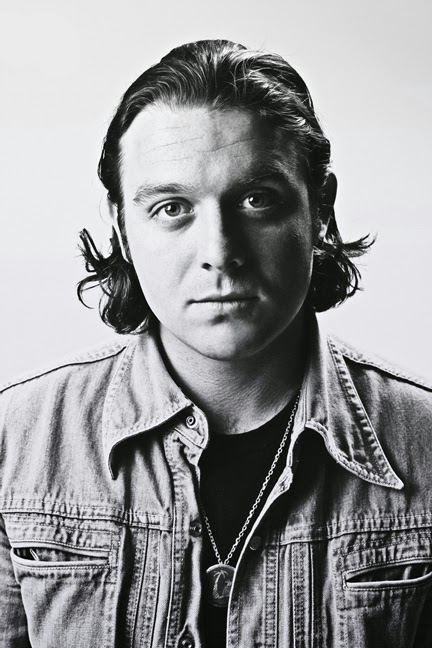
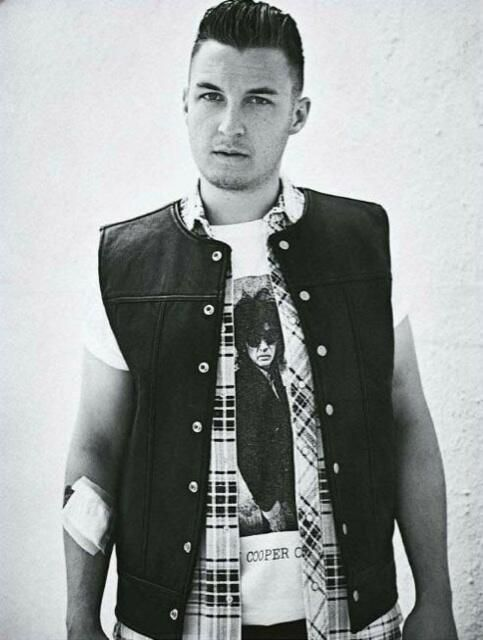

Arctic Monkeys
Członkowie
Alex Turner (ur. 6 stycznia 1986) - śpiew, gitara |
|
Dorastał na przedmieściach Sheffield jako jedyny syn małżeństwa nauczycieli. Na Gwiazdkę roku 2001, Alex otrzymał swoją pierwszą gitarę. Według samego Turnera, to zespół Oasis wzbudził w nim pragnienie grania na gitarze. Jednakże, to wpływy rodziców Turnera (nauczycieli języka niemieckiego i muzyki), pomogły młodemu muzykowi zwracać uwagę na muzyczne detale i skupiać się na budowaniu ciekawych pod względem językowym tekstów piosenek.
Razem z Andym Nicholsonem i Mattem Heldersem, Alex uczęszczał do Stocksbridge High School, gdzie założył w 2003 roku zespół Arctic Monkeys. Turner pracował w tym czasie jako kelner w barach, często podczas koncertów lokalnych zespołów.
Turner prawie zawsze grał na arktycznie białej (Arctic White) gitarze Fender Stratocaster, jak również na czarnej Fender Bronco podczas tworzenia nowego singla Brianstorm i kilku innych piosenek z nowej płyty „Favourite Worst Nightmare”. Związek między nazwą modelu gitary Turnera a nazwą zespołu nie jest potwierdzony. Generalnie, podczas ostatnich występów Alex gra tylko na gitarze Bronco, przy czym zmienia ją na gitarę Gretsch Spectra Sonic podczas grania utworu „If You Were There, Beware”. Muzyk używa wzmacniacza AD30TC w wersji combo. W 2009 r. Alex Turner zaczął grać na gitarze Fender Jazzmaster oraz Ovation Viper. W piosence Teddy picker Alex gra na gitarze firmy Gibson. W utworze "Do I Wanna Know?", korzysta z gitary Vox Teardrop 12 String. |
Jamie Cook (ur. 8 lipca 1985) - gitara |
|  |
Najbliższy sąsiad Alexa z lat młodości. Cook i reszta chłopaków z zespołu po kupieniu odpowiednich instrumentów założyli w 2002 roku oficjalny zespół - Arctic Monkeys.Jamie jest najmniej udzielającym się członkiem zespołu w mediach. Publicznie wypowiadając się, że nienawidzi gazet oraz broniąc kolejnych, licznych płyt zespołu. |
Nicholas O'Malley (ur. 5 lipca 1985) - bass |
|  |
Dołączył do zespołu jako zastępca Andy'ego Nicholsona, który nie chciał jechać wraz z zespołem na tourne po Ameryce Północnej w maju 2006. Miał wtedy dwa dni na nauczenie się debiutanckiego albumu grupy i jak sam mówi "prawie nie wychodził z domu". Pierwszą piosenkę jaką nagrał z zespołem była "Leave Before the Lights Come On".Pierwszy występ z Arctic Monkeys Nick zaliczył podczas sekretnego koncertu w Old Blue Last (pub we wschodnim Londynie). Koncert odbył się przed 120 osobami i miał być to test dla nowego basisty przed występem w Vancouver w Ameryce Północnej w dniu 27 maja na którym miało pojawić się już od 15 do 20 tysięcy osób.O'Malley złamał rękę po jednym z pijackich wybryków z byłym członkiem zespołu Dodgems tydzień przed dołączeniem do Arctic Monkeys. |
Matthew 'The Cat' Helders (ur. 7 maja 1986) - perkusja |
 |
Jego funkcją jest również śpiew towarzyszący (pojawiający się np. w "I bet you look good on the dancefloor", "Teddy Picker", "D Is For A Dangerous"). Uczęszczał do Stocksbridge High School razem z Alexem Turnerem i Andym Nicholsonem (pierwszym basistą zespołu). Do zespołu dołączył w 2002 roku. Grą na perkusji zajął się, ponieważ, jak sam mówi: "To było jedyne, co zostało. Wszyscy mieli już gitary, więc ja kupiłem perkusję". |
Kariera
Grupa zyskała popularność wśród odbiorców nie dzięki reklamom w pismach muzycznych, czy telewizji, ale dzięki zamieszczaniu swoich utworów demo w internecie (co miało miejsce dzięki fanom przychodzącym na ich koncerty). Na listy przebojów Arctic Monkeys trafili w 2005 roku dzięki singlom Leave Before The Lights Come On (2006), I Bet You Look Good on the Dancefloor (2005) oraz When the Sun Goes Down (2006).Na początku 2006 roku zespół wydał debiutancki album Whatever People Say I Am, That's What I'm Not, który stał się najszybciej sprzedawanym debiutanckim albumem w historii brytyjskiego rynku muzycznego. Otrzymał on nagrodę Mercury Prize oraz nagrody BRIT dla najlepszego zespołu brytyjskiego i za najlepszy album brytyjski 2007 roku.Kolejny album został wydany na początku 2007 roku pod tytułem Favourite Worst Nightmare również okazał się dużym sukcesem. Album ten został także nominowany do Mercury Prize w 2007 roku. W 2009 roku Arctic Monkeys wydali trzecią płytę, nazwaną Humbug. 6 czerwca 2011 roku została wydana płyta Suck It and See. 9 września 2013 roku wydany został piąty album studyjny grupy, AM. Płyta zebrała pozytywne recenzje krytyków muzycznych oraz przyniosła Arctic Monkeys trzecią nominację do Mercury Prize. Album debiutował na szczycie UK Albums Chart, dzięki czemu Arctic Monkeys pobili rekord, stając się pierwszym w historii zespołem wydawanym przez niezależną wytwórnię, którego pięć albumów znalazło się na pierwszym miejscu tej listy.
Styl muzyczny
Gatunek muzyczny przypisywany zespołowi to indie rock. Brzmienie grupy ulegało jednak zmianie na każdym wydawnictwie, i jest to jedna z najważniejszych cech wyróżniających Arctic Monkeys na tle innych formacji. Muzycznie zespół rozwijał się z albumu na album, nadając każdemu z nich zupełnie nowy styl, co czyni go trudnym do jednoznacznego sklasyfikowania. Być może kluczowym elementem, który przyniósł zespołowi tak wczesną popularność, są zawiłe, nieoczywiste teksty wokalisty i frontmana Alexa Turnera, śpiewane z charakterystycznym silnym akcentem z Sheffield.W wywiadzie dla NME, Alex Turner wskazał Johna Lennona jako główną inspirację w warstwie lirycznej. Turner wspominał: „Pamiętam kiedy zacząłem pisać piosenki i teksty, bardzo chciałem potrafić napisać piosenkę w stylu „I Am The Walrus” (The Beatles). Było to dla mnie bardzo trudne. Kiedy tego słuchasz, brzmi to jak nonsens, ale bardzo trudno jest napisać coś takiego i sprawić, by to zniewalało. Lennon miał do tego talent.